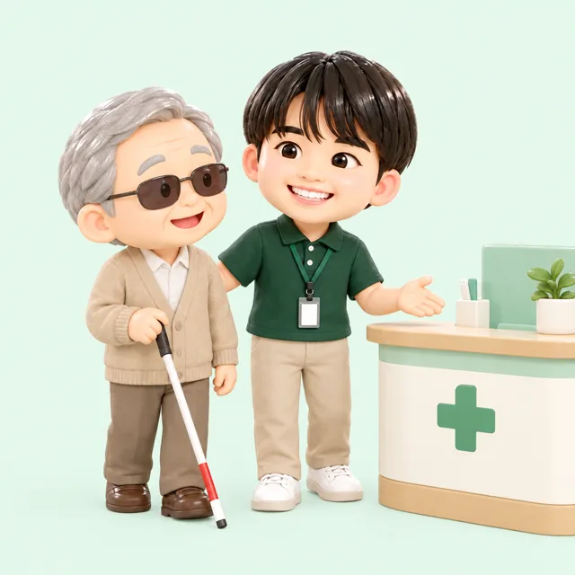

大和市・町田市・相模原市の同行援護
ガイドヘルパー
目の見えない方・見えにくい方の外出に、訪問介護クラージュのヘルパーが同行します。
※イラストはイメージです
目が見えにくくて、外出をあきらめていませんか？
- ひとりで通院するのが不安…駅や病院の中で迷ってしまう
- 役所や銀行の書類が読めない。代わりに書いてくれる人がいない…
- 家族が仕事で付き添えず、買い物や趣味の外出をがまんしている…
そんな声に応えるのが
クラージュの同行援護です！
同行援護は、視覚障害のある方が外出するときにヘルパー（ガイドヘルパー）が同行し、移動の援護や、代筆・代読などの情報提供、外出先での食事や排せつの介護を行う障害福祉サービスです。買い物・通院・役所の手続き・余暇など、さまざまな外出に使えます。
訪問介護クラージュとは？日時はできるだけご希望に合わせて調整
利用したい日時は、できるだけご希望に添えるよう細かく調整します。通院の付き添いや、土日祝日の外出支援にも積極的に対応しています。
男女・幅広い年齢のヘルパーが在籍
男女ともに幅広い年齢のスタッフが活躍しています。同性介助のご希望などにも、できる限り配慮します。
申請の段階から、いっしょに進めます
グループの相談支援事業所「えみたすサポート」と連携し、サービス等利用計画づくりからお手伝いできます。
ヘルパーができること
段差や障害物の案内
ひじや肩につかまっていただき、周りの様子を声でお伝えしながら安全に移動します。
メニューなど
外出先で読む・書くが必要な場面をお手伝いします。
食事・排せつ
外出中に必要な食事や排せつなどの介護も行います。

通院
病院までの移動、受付や会計、院内の移動、薬局での受け取りまで付き添います。
買い物
商品の場所・値段・賞味期限などをお伝えしながら、お買い物をサポートします。
役所・銀行の手続き
窓口での書類の代読・代筆をお手伝いします。
- 散歩・余暇のお出かけ
- 趣味の集まり
- 冠婚葬祭
※通勤・通学など、同行援護が使えない外出もあります。使えるかどうかは、お気軽にご相談ください。 ※イラストはイメージです
| 項目 | 同行援護 | 移動支援 | 行動援護 |
|---|---|---|---|
| 主な対象 | 視覚障害により移動が著しく困難な方 | ひとりでの外出が難しい障害のある方（対象は市区町村が決めます） | 知的障害・精神障害により行動に著しい困難がある方 |
| しくみ | 国の障害福祉サービス | 市区町村の地域生活支援事業 | 国の障害福祉サービス |
| 主な内容 | 移動の援護、代筆・代読などの情報提供、外出先での介護 | 社会生活や余暇・社会参加のための外出の付き添い | 危険を回避するための援護、外出時の介護 |
訪問介護クラージュでは、3つとも対応しています。どれが合うかわからない場合もご相談ください。
- 視覚障害により、移動に著しい困難がある方
- 「同行援護アセスメント調査票」で、視力障害・視野障害・夜盲のいずれかが1点以上、かつ移動障害が1点以上の方
- 身体介護をともなわない場合は、障害支援区分の認定は必要ありません
最終的には、お住まいの市区町村が判断します。あてはまるかわからない場合も、お気軽にご相談ください。
障害福祉サービスの利用者負担は、原則サービス費用の1割です。世帯の所得に応じて月ごとの負担上限額が決められており、それ以上の負担はありません。
市町村民税非課税世帯
（所得割16万円未満）
18歳以上の方の場合。世帯の範囲はご本人と配偶者です。
- STEP1
お問い合わせ
お電話（042-850-7916）・フォーム・LINEからご連絡ください。ご本人・ご家族・相談支援専門員さま、どなたからでも大丈夫です。
- STEP2
市区町村への申請
お住まいの市区町村（大和市の方は大和市役所）の障害福祉の窓口に申請します。同行援護アセスメントのための調査があります。申請の仕方もご案内します。
- STEP3
サービス等利用計画の作成
相談支援事業所が計画を作ります。グループの「えみたすサポート」でもお手伝いできます。
- STEP4
受給者証の交付・ご契約
受給者証が届いたら、サービス提供責任者がご自宅に伺い、支援の内容や時間を確認してご契約を結びます。
- STEP5
サービス開始
ヘルパーが伺い、支援を始めます。始めたあとも、ご様子をみながら内容を見直します。
大和市・町田市・相模原市を
中心に伺います！
近隣エリアにも伺います。エリア外の方も、まずはご相談ください。
- 大和市
- 町田市
- 相模原市
- 海老名市
- 座間市
- 綾瀬市
- 横浜市瀬谷区
大和市では、中央林間・南林間・鶴間・大和・桜ヶ丘・高座渋谷など、市内全域からのご相談をお待ちしています。
大和市に住んでいても利用できますか？
はい。訪問介護クラージュは大和市・町田市・相模原市を中心に伺っています。大和市にお住まいの方も、お気軽にご相談ください。
どんな外出に使えますか？
買い物、通院、役所や銀行での手続き、冠婚葬祭、趣味や余暇の外出など、日常のさまざまな外出に使えます。通勤・通学など一部の外出には使えません。
書類を読んでもらうことはできますか？
外出先での代読・代筆に対応します。
身体障害者手帳がないと使えませんか？
手帳の等級ではなく、市区町村によるアセスメントで判断されます。くわしくはご相談ください。
まだ受給者証を持っていません。どうすればいいですか？
受給者証がなくても、まずはご相談ください。お住まいの市区町村への申請の流れからご案内します。グループの相談支援事業所「えみたすサポート」で、サービス等利用計画づくりもお手伝いできます。
土日祝日も利用できますか？
はい。土日祝日の外出支援にも積極的に対応しています。日時はできるだけご希望に合わせて調整します。
男性・女性のヘルパーを選べますか？
男女ともに幅広い年齢のスタッフが在籍しています。同性介助のご希望などもできる限り配慮します。
今ほかの事業所を使っています。追加で頼めますか？
はい、ご相談ください。ほかの事業所と組み合わせてご利用いただくこともできます。
- 事業所名
- 訪問介護クラージュ（株式会社NewValley）
- 住所
- 〒194-0012 東京都町田市金森3-23-1-2F
- 電話
- 042-850-7916
- 営業時間
- 月〜土 9:00〜18:00（要相談）
- 対応エリア
- 大和市・町田市・相模原市を中心に、海老名市・座間市・綾瀬市・横浜市瀬谷区など
- サービス
- 同行援護・行動援護・重度訪問介護・居宅介護・移動支援・介護保険の訪問介護
まずはお気軽にご相談ください
「使えるかどうかわからない」段階でも大丈夫です。ご本人・ご家族・支援者の方、どなたからでも。ご相談は無料です。
042-850-7916